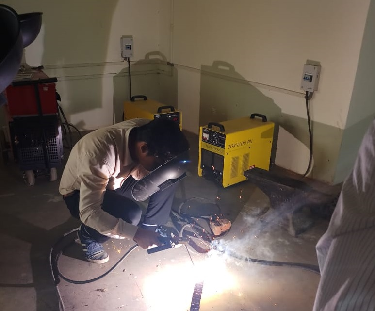

<div class="body-1">
    <div class="main-body">
        <h3 class="title-main">
            <center>WORKSHOP</center>
        </h3>
        <span class="sub-desc">
        <p>Workshop practice is the backbone of the real industrial environment which helps to develop and enhance relevant technical hand skills required by the technician working in the various engineering industries and workshops. This course intends
            to impart basic know-how of various hand tools and their use in different sections of manufacturing. Irrespective of branch, the use of workshop practices in day to day industrial as well domestic life helps to dissolve the problems.
            <br>
            <br> The workshop experiences would help to build the understanding of the complexity of the industrial job, along with time and skills requirements of the job. Workshop curricula build the hands on experiences which would help to learn manufacturing
            processes and production technology courses in successive semesters. Workshop practice is also important since only practice can make the man perfect. The students are advised to undergo each skill experience with remembrance, understanding
            and application with special emphasis on attitude of enquiry to know why and how for the various instructions and practices imparted to them in each shop.
            <br>
            <br> The course content should be taught and implemented with the aim to develop different types of skills leading to the achievement of the following competencies.
            <br>
            <br> <b>Prepare simple jobs in fitting, carpentry, pipefitting and metal joining shop while following
    safe working and good housekeeping practices.</b>
            <br>
        </p>
        </span>
         </div>
</div>